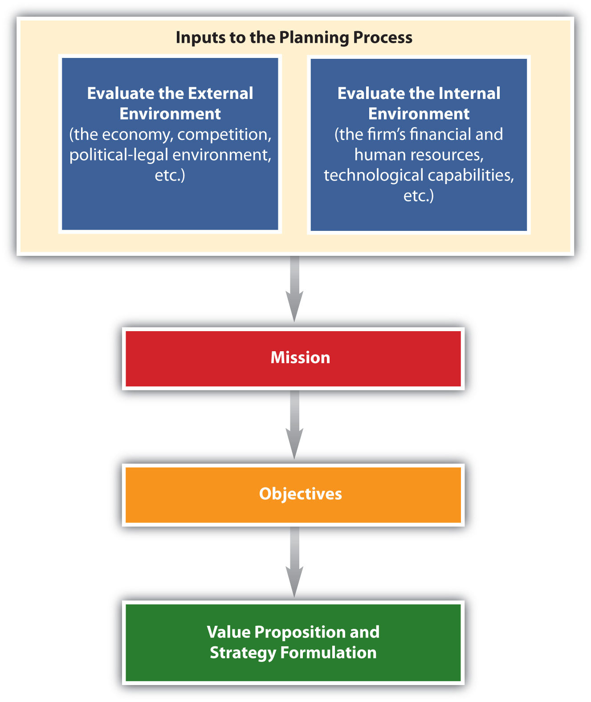
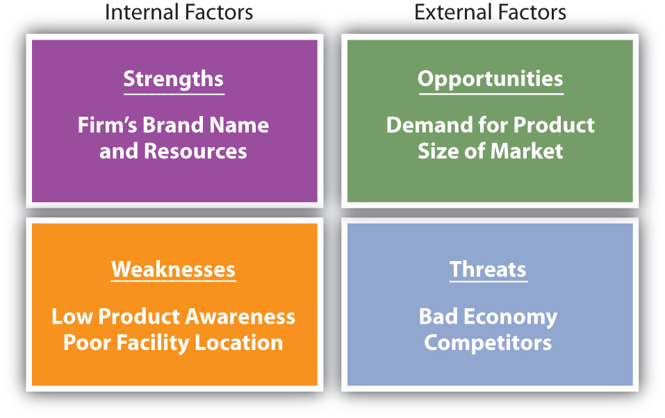
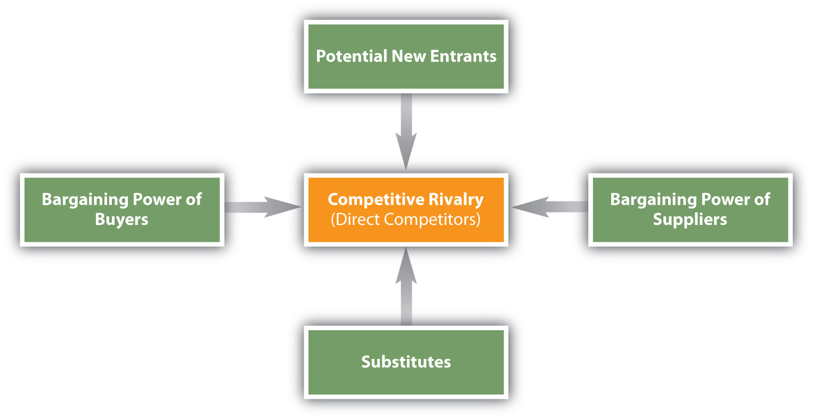
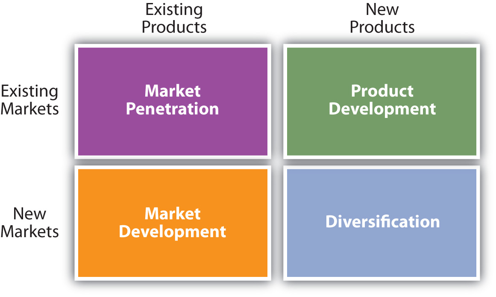
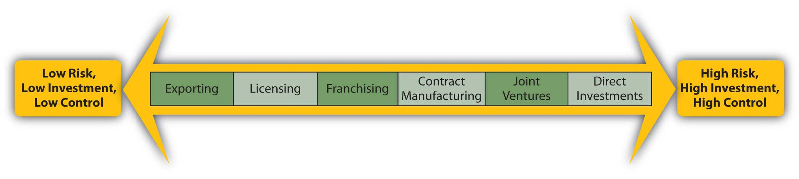
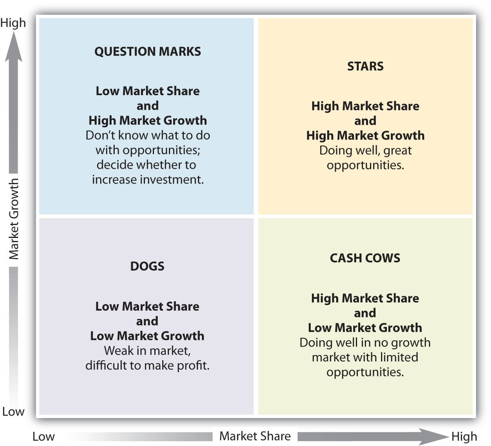
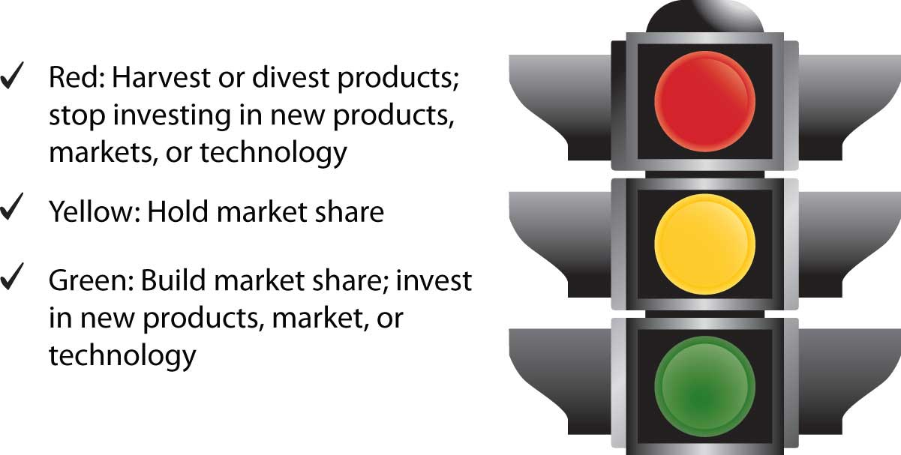

Have you ever wondered how an organization decides which products and services to develop, price, promote, and sell? Organizations typically develop plans and strategies that outline how they want to go about this process. Such a plan must take into account a company’s current internal conditions, such as its resources, capabilities, technology, and so forth. The plan must also take into account conditions in the external environment, such as the economy, competitors, and government regulations that could affect what the firm wants to do. Organizations must also offer value to customers and graduates must provide value to their employers. As such, the value proposition becomes the basis for developing strategies. Given its importance for both organizations and students, we begin with the value proposition and then discuss the strategic planning process.
Just as your personal plans—such as what you plan to major in or where you want to find a job—are likely to change, organizations also have contingency plans. Individuals and organizations both must develop long-term (longer than a year) strategic plans, match their strengths and resources to available opportunities, and adjust their plans to changing circumstances as necessary.
Individual buyers and organizational buyers both evaluate products and services to see if they provide desired benefits. For example, when you’re exploring your vacation options, you want to know the benefits of each destination and the value you will get by going to each place. Before you (or a firm) can develop a strategy or create a strategic plan, you first have to develop a value proposition. A value propositionA statement that summarizes the key benefits or value for target customers. It explains why customers should buy a product, why stakeholders should donate, or why prospective employers may want to hire someone for their organization. is a thirty-second “elevator speech” stating the specific benefits a product or service offering provides a buyer. It shows why the product or service is superior to competing offers. The value proposition answers the questions, “Why should I buy from you or why should I hire you?” As such, the value proposition becomes a critical component in shaping strategy.
The following is an example of a value proposition developed by a sales consulting firm: “Our clients grow their business, large or small, typically by a minimum of 30–50% over the previous year. They accomplish this without working 80 hour weeks and sacrificing their personal lives.”Laura Lake, “Develop Your Value Proposition,” http://marketing.about.com/od/marketingplanandstrategy/a/valueprop.htm (accessed December 7, 2009).
Note that although a value proposition will hopefully lead to profits for a firm, when the firm presents its value proposition to its customers, it doesn’t mention its own profits. That’s because the goal is to focus on the external market or what customers want.
Figure 2.1
Like any other company, Beaches, an all-inclusive chain of resorts for families, must explain what its value proposition is to customers. In other words, why does a Beaches resort provide more value to vacationing families than do other resorts?
Source: Wikimedia Commons.
Firms typically segment markets and then identify different target marketsThe group of customers toward which an organization directs its marketing efforts., or groups of customers, they want to reach when they are developing their value propositions. Target markets will be discussed in more detail in Chapter 5 "Market Segmenting, Targeting, and Positioning". For now, be aware that companies sometimes develop different value propositions for different target markets just as individuals may develop a different value proposition for different employers. The value proposition tells each group of customers (or potential employers) why they should buy a product or service, vacation to a particular destination, donate to an organization, hire you, and so forth.
Once the benefits of a product or service are clear, the firm must develop strategies that support the value proposition. The value proposition serves as a guide for this process. In the case of our sales consulting firm, the strategies it develops must help clients improve their sales by 30–50 percent. Likewise, if a company’s value proposition states that the firm is the largest retailer in the region with the most stores and best product selection, opening stores or increasing the firm’s inventory might be a key part of the company’s strategy. Looking at Amazon’s value proposition, “Low price, wide selection with added convenience anytime, anywhere,” one can easily see how Amazon has been so successful.“How Do You Develop a Unique Value Proposition?,” http://www.infomarketerszone.com/public/182.cfm (accessed February 12, 2012).
Individuals and students should also develop their own personal value propositions. Tell companies why they should hire you or why a graduate school should accept you. Show the value you bring to the situation. A value proposition will help you in different situations. Think about how your internship experience and/or study abroad experience may help a future employer. For example, you should explain to the employer the benefits and value of going abroad. Perhaps your study abroad experience helped you understand customers that buy from Company X and your customer service experience during your internship increased your ability to generate sales, which improved your employer’s profit margin. Thus you may be able to quickly contribute to Company X, something that they might very much value.
A value proposition is a thirty-second “elevator speech” stating the specific value a product or service provides to a target market. Firms may develop different value propositions for different groups of customers. The value proposition shows why the product or service is superior to competing offers and why the customer should buy it or why a firm should hire you.
Strategic planning is a process that helps an organization allocate its resources to capitalize on opportunities in the marketplace. Typically, it is a long-term process. The strategic planning processA process that helps an organization allocate its resources under different conditions to accomplish its objectives, deliver value, and be competitive in a market-driven economy. includes conducting a situation analysis and developing the organization’s mission statement, objectives, value proposition, and strategies. Figure 2.2 "The Strategic Planning Process" shows the components of the strategic planning process. Let’s now look at each of these components.
Figure 2.2 The Strategic Planning Process
As part of the strategic planning process, a situation analysisAn assessment of an organization’s internal and external environments. must be conducted before a company can decide on specific actions. A situation analysis involves analyzing both the external (macro and micro factors outside the organization) and the internal (company) environments. Figure 2.2 "The Strategic Planning Process" and Figure 2.3 "Elements of a SWOT Analysis" show examples of internal and external factors and in a SWOT analysis. The firm’s internal environment—such as its financial resources, technological resources, and the capabilities of its personnel and their performance—has to be examined. It is also critical to examine the external macro and micro environments the firm faces, such as the economy and its competitors. The external environment significantly affects the decisions a firm makes, and thus must be continuously evaluated. For example, during the economic downturn in 2008–2009, businesses found that many competitors cut the prices of their products drastically. Other companies reduced package sizes or the amount of product in packages. Firms also offered customers incentives (free shipping, free gift cards with purchase, rebates, etc.) to purchase their goods and services online, which allowed businesses to cut back on the personnel needed to staff their brick-and-mortar stores. While a business cannot control things such as the economy, changes in demographic trends, or what competitors do, it must decide what actions to take to remain competitive—actions that depend in part on their internal environment.
Based on the situation analysis, organizations analyze their strengths, weaknesses, opportunities, and threats, or conduct what’s called a SWOT analysisAn acronym for strengths, weaknesses, opportunities, and threats, the SWOT analysis is a tool that frames the situational analysis.. Strengths and weaknesses are internal factors and are somewhat controllable. For example, an organization’s strengths might include its brand name, efficient distribution network, reputation for great service, and strong financial position. A firm’s weaknesses might include lack of awareness of its products in the marketplace, a lack of human resources talent, and a poor location. Opportunities and threats are factors that are external to the firm and largely uncontrollable. Opportunities might entail the international demand for the type of products the firm makes, few competitors, and favorable social trends such as people living longer. Threats might include a bad economy, high interest rates that increase a firm’s borrowing costs, and an aging population that makes it hard for the business to find workers.
You can conduct a SWOT analysis of yourself to help determine your competitive advantage. Perhaps your strengths include strong leadership abilities and communication skills, whereas your weaknesses include a lack of organization. Opportunities for you might exist in specific careers and industries; however, the economy and other people competing for the same position might be threats. Moreover, a factor that is a strength for one person (say, strong accounting skills) might be a weakness for another person (poor accounting skills). The same is true for businesses. See Figure 2.3 "Elements of a SWOT Analysis" for an illustration of some of the factors examined in a SWOT analysis.
Figure 2.3 Elements of a SWOT Analysis
The easiest way to determine if a factor is external or internal is to take away the company, organization, or individual and see if the factor still exists. Internal factors such as strengths and weaknesses are specific to a company or individual, whereas external factors such as opportunities and threats affect multiple individuals and organizations in the marketplace. For example, if you are doing a situation analysis on PepsiCo and are looking at the weak economy, take PepsiCo out of the picture and see what factors remain. If the factor—the weak economy—is still there, it is an external factor. Even if PepsiCo hadn’t been around in 2008–2009, the weak economy reduced consumer spending and affected a lot of companies.
As we have indicated, when an organization evaluates which factors are its strengths and weaknesses, it is assessing its internal environment. Once companies determine their strengths, they can use those strengths to capitalize on opportunities and develop their competitive advantage. For example, strengths for PepsiCo are what are called “mega” brands, or brands that individually generate over $1 billion in sales.PepsiCo, Inc., “PepsiCo Brands,” http://www.pepsico.com/Company/Our-Brands.html (accessed December 7, 2009). These brands are also designed to contribute to PepsiCo’s environmental and social responsibilities.
PepsiCo’s brand awareness, profitability, and strong presence in global markets are also strengths. Especially in foreign markets, the loyalty of a firm’s employees can be a major strength, which can provide it with a competitive advantage. Loyal and knowledgeable employees are easier to train and tend to develop better relationships with customers. This helps organizations pursue more opportunities.
Although the brand awareness for PepsiCo’s products is strong, smaller companies often struggle with weaknesses such as low brand awareness, low financial reserves, and poor locations. When organizations assess their internal environments, they must look at factors such as performance and costs as well as brand awareness and location. Managers need to examine both the past and current strategies of their firms and determine what strategies succeeded and which ones failed. This helps a company plan its future actions and improves the odds they will be successful. For example, a company might look at packaging that worked very well for a product and use the same type of packaging for new products. Firms may also look at customers’ reactions to changes in products, including packaging, to see what works and doesn’t work. When PepsiCo changed the packaging of major brands in 2008, customers had mixed responses. Tropicana switched from the familiar orange with the straw in it to a new package and customers did not like it. As a result, Tropicana changed back to their familiar orange with a straw after spending $35 million for the new package design.
Tropicana’s Recent Ad
http://www.youtube.com/v/LDnkqlnhGGITropicana’s recent ad left out the familiar orange with a straw.
Individuals are also wise to look at the strategies they have tried in the past to see which ones failed and which ones succeeded. Have you ever done poorly on an exam? Was it the instructor’s fault, the strategy you used to study, or did you decide not to study? See which strategies work best for you and perhaps try the same type of strategies for future exams. If a strategy did not work, see what went wrong and change it. Doing so is similar to what organizations do when they analyze their internal environments.
Analyzing the external environment involves tracking conditions in the macro and micro marketplace that, although largely uncontrollable, affect the way an organization does business. The macro environment includes economic factors, demographic trends, cultural and social trends, political and legal regulations, technological changes, and the price and availability of natural resources. Each factor in the macro environment is discussed separately in the next section. The micro environment includes competition, suppliers, marketing intermediaries (retailers, wholesalers), the public, the company, and customers. We focus on competition in our discussion of the external environment in the chapter. Customers, including the public will be the focus of Chapter 3 "Consumer Behavior: How People Make Buying Decisions" and marketing intermediaries and suppliers will be discussed in Chapter 8 "Using Marketing Channels to Create Value for Customers" and Chapter 9 "Using Supply Chains to Create Value for Customers".
When firms globalize, analyzing the environment becomes more complex because they must examine the external environment in each country in which they do business. Regulations, competitors, technological development, and the economy may be different in each country and will affect how firms do business. To see how factors in the external environment such as technology may change education and lives of people around the world, watch the videos “Did You Know 2.0?” and “Did You Know 3.0?” which provide information on social media sites compared to populations in the world. Originally created in 2006 and revised in 2007, the video has been updated and translated into other languages. Another edition of “Did You Know?” (4.0) focused on changing media and technology and showed how information may change the world as well as the way people communicate and conduct business.
Did You Know 2.0?
http://www.youtube.com/v/pMcfrLYDm2UTo see how the external environment and world are changing and in turn affecting marketing strategies, check out “Did You Know 2.0?”
Did You Know 4.0?
http://www.youtube.com/v/6ILQrUrEWe8To see how fast things change and the impact of technology and social media, visit “Did You Know 4.0?”
Although the external environment affects all organizations, companies must focus on factors that are relevant for their operations. For example, government regulations on food packaging will affect PepsiCo but not Goodyear. Similarly, students getting a business degree don’t need to focus on job opportunities for registered nurses.
All organizations must consider their competition, whether it is direct or indirect competition vying for the consumer’s dollar. Both nonprofit and for-profit organizations compete for customers’ resources. Coke and Pepsi are direct competitors in the soft drink industry, Hilton and Sheraton are competitors in the hospitality industry, and organizations such as United Way and the American Cancer Society compete for resources in the nonprofit sector. However, hotels must also consider other options that people have when selecting a place to stay, such as hostels, dorms, bed and breakfasts, or rental homes.
A group of competitors that provide similar products or services form an industry. Michael Porter, a professor at Harvard University and a leading authority on competitive strategy, developed an approach for analyzing industries. Called the five forces modelMichael E. Porter, Competitive Strategy (New York: The Free Press, 1980), 3–33. and shown in Figure 2.5 "Five Forces Model", the framework helps organizations understand their current competitors as well as organizations that could become competitors in the future. As such, firms can find the best way to defend their position in the industry.
Figure 2.5 Five Forces ModelMichael E. Porter, Competitive Strategy (New York: The Free Press, 1980), 4.
When a firm conducts a competitive analysis, they tend to focus on direct competitors and try to determine a firm’s strengths and weaknesses, its image, and its resources. Doing so helps the firm figure out how much money a competitor may be able to spend on things such as research, new product development, promotion, and new locations. Competitive analysis involves looking at any information (annual reports, financial statements, news stories, observation details obtained on visits, etc.) available on competitors. Another means of collecting competitive information utilizes mystery shoppersA person who is paid to shop at a firm’s establishment or one of its competitors’ to observe the level of service, cleanliness of the facility, and so forth, and report his or her findings to the firm., or people who act like customers. Mystery shoppers might visit competitors to learn about their customer service and their products. Imagine going to a competitor’s restaurant and studying the menu and the prices and watching customers to see what items are popular and then changing your menu to better compete. Competitors battle for the customer’s dollar and they must know what other firms are doing. Individuals and teams also compete for jobs, titles, and prizes and must figure out the competitors’ weaknesses and plans in order to take advantage of their strengths and have a better chance of winning.
According to Porter, in addition to their direct competitors (competitive rivals), organizations must consider the strength and impact the following could have:Michael E. Porter, Competitive Strategy (New York: The Free Press, 1980), 3–33.
When any of these factors change, companies may have to respond by changing their strategies. For example, because buyers are consuming fewer soft drinks these days, companies such as Coke and Pepsi have had to develop new, substitute offerings such as vitamin water and sports drinks. However, other companies such as Dannon or Nestlé may also be potential entrants in the flavored water market. When you select a hamburger fast-food chain, you also had the option of substitutes such as getting food at the grocery or going to a pizza place. When computers entered the market, they were a substitute for typewriters. Most students may not have ever used a typewriter, but some consumers still use typewriters for forms and letters.
Figure 2.6

When personal computers were first invented, they were a serious threat to typewriter makers such as Smith Corona.
Source: Flickr.
Suppliers, the companies that supply ingredients as well as packaging materials to other companies, must also be considered. If a company cannot get the supplies it needs, it’s in trouble. Also, sometimes suppliers see how lucrative their customers’ markets are and decide to enter them. Buyers, who are the focus of marketing and strategic plans, must also be considered because they have bargaining power and must be satisfied. If a buyer is large enough, and doesn’t purchase a product or service, it can affect a selling company’s performance. Walmart, for instance, is a buyer with a great deal of bargaining power. Firms that do business with Walmart must be prepared to make concessions to them if they want their products on the company’s store shelves.
Lastly, the world is becoming “smaller” and a more of a global marketplace. Companies everywhere are finding that no matter what they make, numerous firms around the world are producing the same “widget” or a similar offering (substitute) and are eager to compete with them. Employees are in the same position. The Internet has made it easier than ever for customers to find products and services and for workers to find the best jobs available, even if they are abroad. Companies are also acquiring foreign firms. These factors all have an effect on the strategic decisions companies make.
All organizations must comply with government regulations and understand the political and legal environments in which they do business. Different government agencies enforce the numerous regulations that have been established to protect both consumers and businesses. For example, the Sherman Act (1890) prohibits U.S. firms from restraining trade by creating monopolies and cartels. The regulations related to the act are enforced by the Federal Trade Commission (FTC), which also regulates deceptive advertising. The U.S. Food and Drug Administration (FDA) regulates the labeling of consumable products, such as food and medicine. One organization that has been extremely busy is the Consumer Product Safety Commission, the group that sets safety standards for consumer products. Unsafe baby formula and toys with lead paint caused a big scare among consumers in 2008 and 2009.
Figure 2.7
The U.S. Food and Drug Administration prohibits companies from using unacceptable levels of lead in toys and other household objects, such as utensils and furniture. Mattel voluntarily recalled Sarge cars made in mid-2000.
Source: U.S. Consumer Product Safety Commission.
As we have explained, when organizations conduct business in multiple markets, they must understand that regulations vary across countries and across states. Many states and countries have different laws that affect strategy. For example, suppose you are opening up a new factory because you cannot keep up with the demand for your products. If you are considering opening the factory in France (perhaps because the demand in Europe for your product is strong), you need to know that it is illegal for employees in that country to work more than thirty-five hours per week.
The economy has a major impact on spending by both consumers and businesses, which, in turn, affects the goals and strategies of organizations. Economic factors include variables such as inflation, unemployment, interest rates, and whether the economy is in a growth period or a recession. Inflation occurs when the cost of living continues to rise, eroding the purchasing power of money. When this happens, you and other consumers and businesses need more money to purchase goods and services. Interest rates often rise when inflation rises. Recessions can also occur when inflation rises because higher prices sometimes cause low or negative growth in the economy.
During a recessionary period, it is possible for both high-end and low-end products to sell well. Consumers who can afford luxury goods may continue to buy them, while consumers with lower incomes tend to become more value conscious. Other goods and services, such as products sold in traditional department stores, may suffer. In the face of a severe economic downturn, even the sales of luxury goods can suffer. The economic downturn that began in 2008 affected consumers and businesses at all levels worldwide. Consumers reduced their spending, holiday sales dropped, financial institutions went bankrupt, the mortgage industry collapsed, and the “Big Three” U.S. auto manufacturers (Ford, Chrysler, and General Motors) asked for emergency loans.
The demographic and social and cultural environments—including social trends, such as people’s attitudes toward fitness and nutrition; demographic characteristics, such as people’s age, income, marital status, education, and occupation; and culture, which relates to people’s beliefs and values—are constantly changing in the global marketplace. Fitness, nutrition, and health trends affect the product offerings of many firms. For example, PepsiCo produces vitamin water and sports drinks. More women are working, which has led to a rise in the demand for services such as house cleaning and daycare. U.S. baby boomers are reaching retirement age, sending their children to college, and trying to care of their elderly parents all at the same time. Firms are responding to the time constraints their buyers face by creating products that are more convenient, such as frozen meals and nutritious snacks.
The composition of the population is also constantly changing. Hispanics are the fastest-growing minority in the United States. Consumers in this group and other diverse groups prefer different types of products and brands. In many cities, stores cater specifically to Hispanic customers.
The technology available in the world is changing the way people communicate and the way firms do business. Everyone is affected by technological changes. Self-scanners and video displays at stores, ATMs, the Internet, and mobile phones are a few examples of how technology is affecting businesses and consumers. Many consumers get information, read the news, use text messaging, and shop online. As a result, marketers have begun allocating more of their promotion budgets to online ads and mobile marketing and not just to traditional print media such as newspapers and magazines. Applications for telephones and electronic devices are changing the way people obtain information and shop, allowing customers to comparison shop without having to visit multiple stores. As you saw in "Did You Know 4.0?" technology and social media are changing people’s lives. Many young people may rely more on electronic books, magazines, and newspapers and depend on mobile devices for most of their information needs. Organizations must adapt to new technologies in order to succeed.
Natural resources are scarce commodities, and consumers are becoming increasingly aware of this fact. Today, many firms are doing more to engage in “sustainable” practices that help protect the environment and conserve natural resources. Green marketingMarketing environmentally safe products and services in a way that is good for the environment. involves marketing environmentally safe products and services in a way that is good for the environment. Water shortages often occur in the summer months, so many restaurants now only serve patrons water upon request. Hotels voluntarily conserve water by not washing guests’ sheets and towels every day unless they request it. Reusing packages (refillable containers) and reducing the amount of packaging, paper, energy, and water in the production of goods and services are becoming key considerations for many organizations, whether they sell their products to other businesses or to final users (consumers). Construction companies are using more energy efficient materials and often have to comply with green building solutions. Green marketing not only helps the environment but also saves the company, and ultimately the consumer, money. Sustainability, ethics (doing the right things), and social responsibility (helping society, communities, and other people) influence an organization’s planning process and the strategies they implement.
Although environmental conditions change and must be monitored continuously, the situation analysis is a critical input to an organization’s or an individual’s strategic plan. Let’s look at the other components of the strategic planning process.
The firm’s mission statementDefines the purpose of the organization and answers the question of how a company defines its business. states the purpose of the organization and why it exists. Both profit and nonprofit organizations have mission statements, which they often publicize. The following are examples of mission statements:
PepsiCo’s Mission Statement
“Our mission is to be the world’s premier consumer products company focused on convenient foods and beverages. We seek to produce financial rewards to investors as we provide opportunities for growth and enrichment to our employees, our business partners and the communities in which we operate. And in everything we do, we strive for honesty, fairness and integrity.”PepsiCo, Inc., “Our Mission and Vision,” http://www.pepsico.com/Company/Our-Mission-and-Vision.html (accessed December 7, 2009).
The United Way’s Mission Statement
“To improve lives by mobilizing the caring power of communities.”United Way Worldwide, “Mission and Vision,” http://www.liveunited.org/about/missvis.cfm (accessed December 7, 2009).
Sometimes SBUs develop separate mission statements. For example, PepsiCo Americas Beverages, PepsiCo Americas Foods, and PepsiCo International might each develop a different mission statement.
A firm must analyze factors in the external and internal environments it faces throughout the strategic planning process. These factors are inputs to the planning process. As they change, the company must be prepared to adjust its plans. Different factors are relevant for different companies. Once a company has analyzed its internal and external environments, managers can begin to decide which strategies are best, given the firm’s mission statement.
ObjectivesWhat organizations want to accomplish (the end results) in a given time frame. are what organizations want to accomplish—the end results they want to achieve—in a given time frame. In addition to being accomplished within a certain time frame, objectives should be realistic (achievable) and be measurable, if possible. “To increase sales by 2 percent by the end of the year” is an example of an objective an organization might develop. You have probably set objectives for yourself that you want to achieve in a given time frame. For example, your objectives might be to maintain a certain grade point average and get work experience or an internship before you graduate.
Objectives help guide and motivate a company’s employees and give its managers reference points for evaluating the firm’s marketing actions. Although many organizations publish their mission statements, most for-profit companies do not publish their objectives. Accomplishments at each level of the organization have helped PepsiCo meet its corporate objectives over the course of the past few years. PepsiCo’s business units (divisions) have increased the number of their facilities to grow their brands and enter new markets. PepsiCo’s beverage and snack units have gained market share by developing healthier products and products that are more convenient to use.
A firm’s marketing objectives should be consistent with the company’s objectives at other levels, such as the corporate level and business level. An example of a marketing objective for PepsiCo might be “to increase by 4 percent the market share of Gatorade by the end of the year.” The way firms analyze their different divisions or businesses will be discussed later in the chapter.
StrategiesActions (means) taken to accomplish objectives. are the means to the ends, the game plan, or what a firm is going to do to achieve its objectives. Successful strategies help organizations establish and maintain a competitive advantage that competitors cannot imitate easily. TacticsActions taken to execute strategies. include specific actions, such as coupons, television commercials, banner ads, and so on, taken to execute the strategy. PepsiCo attempts to sustain its competitive advantage by constantly developing new products and innovations, including “mega brands,” which include nineteen individual brands that generate over $1 billion in sales each. The tactics may consist of specific actions (commercials during the Super Bowl; coupons; buy one, get one free, etc.) to advertise each brand.
Firms often use multiple strategies to accomplish their objectives and capitalize on marketing opportunities. For example, in addition to pursuing a low cost strategy (selling products inexpensively), Walmart has simultaneously pursued a strategy of opening new stores rapidly around the world. Many companies develop marketing strategies as part of their general, overall business plans. Other companies prepare separate marketing plans. We’ll look at marketing plans here and discuss them more completely in Chapter 16 "The Marketing Plan".
A marketing planA document that is designed to communicate the marketing strategy for an offering. The purpose of the plan is to influence executives, suppliers, distributors, and other important stakeholders of the firm so they will invest money, time, and effort to ensure the plan is a success. is a strategic plan at the functional level that provides a firm’s marketing group with direction. It is a road map that improves the firm’s understanding of its competitive situation. The marketing plan also helps the firm allocate resources and divvy up the tasks that employees need to do for the company to meet its objectives. The different components of marketing plans will be discussed throughout the book and then discussed together at the end of the book. Next, let’s take a look at the different types of basic market strategies firms pursue before they develop their marketing plans.
Figure 2.10 Product and Market Entry Strategies
The different types of product and market entry strategies a firm can pursue in order to meet their objectives.
Market penetration strategiesSelling more of existing products and services to existing customers. focus on increasing a firm’s sales of its existing products to its existing customers. Companies often offer consumers special promotions or low prices to increase their usage and encourage them to buy products. When Frito-Lay distributes money-saving coupons to customers or offers them discounts to buy multiple packages of snacks, the company is utilizing a penetration strategy. The Campbell Soup Company gets consumers to buy more soup by providing easy recipes using their soup as an ingredient for cooking quick meals.
Product development strategiesCreating new products or services for existing markets. involve creating new products for existing customers. A new product can be a totally new innovation, an improved product, or a product with enhanced value, such as one with a new feature. Cell phones that allow consumers to charge purchases with the phone or take pictures are examples of a product with enhanced value. A new product can also be one that comes in different variations, such as new flavors, colors, and sizes. Mountain Dew Voltage, introduced by PepsiCo Americas Beverages in 2009, is an example. Keep in mind, however, that what works for one company might not work for another. For example, just after Starbucks announced it was cutting back on the number of its lunch offerings, Dunkin’ Donuts announced it was adding items to its lunch menu.
Market development strategiesSelling existing products or services to new customers. Foreign markets often present opportunities for organizations to expand. Exporting, licensing, franchising, joint ventures, and direct investment are methods that companies use to enter international markets. focus on entering new markets with existing products. For example, during the recent economic downturn, manufacturers of high-end coffee makers began targeting customers who go to coffee shops. The manufacturers are hoping to develop the market for their products by making sure consumers know they can brew a great cup of coffee at home for a fraction of what they spend at Starbucks.
New markets can include any new groups of customers such as different age groups, new geographic areas, or international markets. Many companies, including PepsiCo and Hyundai, have entered—and been successful in—rapidly emerging markets such as Russia, China, and India. Decisions to enter foreign markets are based on a company’s resources as well as the complexity of factors such as the political environmental, economic conditions, competition, customer knowledge, and probability of success in the desired market. As Figure 2.10 "Product and Market Entry Strategies" shows, there are different ways, or strategies, by which firms can enter international markets. The strategies vary in the amount of risk, control, and investment that firms face. Firms can simply exportSell products to buyers in foreign markets., or sell their products to buyers abroad, which is the least risky and least expensive method but also offers the least amount of control. Many small firms export their products to foreign markets.
Firms can also licenseSell the right to use some aspect of the production process, trademark, or patent to individuals in foreign markets., or sell the right to use some aspect of their production processes, trademarks, or patents to individuals or firms in foreign markets. Licensing is a popular strategy, but firms must figure out how to protect their interests if the licensee decides to open its own business and void the license agreement. The French luggage and handbag maker Louis Vuitton faced this problem when it entered China. Competitors started illegally putting the Louis Vuitton logo on different products, which cut into Louis Vuitton’s profits.
Figure 2.11
The front of a KFC franchise in Asia may be much larger than KFC stores in the United States. Selling franchises is a popular way for firms to enter foreign markets.
Source: Wikimedia Commons.
FranchisingGranting an independent operator the right to use your company’s business model, techniques, and trademarks for a fee. is a longer-term (and thus riskier) form of licensing that is extremely popular with service firms, such as restaurants like McDonald’s and Subway, hotels like Holiday Inn Express, and cleaning companies like Stanley Steamer. Franchisees pay a fee for the franchise and must adhere to certain standards; however, they benefit from the advertising and brand recognition the franchising company provides.
Contract manufacturingWhen companies hire manufacturers to produce their products in another country. allows companies to hire manufacturers to produce their products in another country. The manufacturers are provided specifications for the products, which are then manufactured and sold on behalf of the company that contracted the manufacturing. Contract manufacturing may provide tax incentives and may be more profitable than manufacturing the products in the home country. Examples of products in which contract manufacturing is often used include cell phones, computers, and printers.
Joint venturesAn entity that is created when two parties agree to share their profits, losses, and control with one another in an economic activity they jointly undertake. combine the expertise and investments of two companies and help companies enter foreign markets. The firms in each country share the risks as well as the investments. Some countries such as China often require companies to form a joint venture with a domestic firm in order to enter the market. After entering the market in a partnership with a domestic firm and becoming established in the market, some firms may decide to separate from their partner and become their own business. Fuji Xerox Co., Ltd. is an example of a joint venture between the Japanese Fuji Photo Film Co. and the American document management company Xerox. Another example of a joint venture is Sony Ericsson. The venture combined the Japanese company Sony’s electronic expertise with the Swedish company Ericsson’s telecommunication expertise. With investment by both companies, joint ventures are riskier than exporting, licensing, franchising, and contract manufacturing but also provide more control to each partner.
Direct investmentOwning a company or facility overseas. (owning a company or facility overseas) is another way to enter a foreign market, providing the most control but also having the most risk. For example, In Bev, the Dutch maker of Beck’s beer, was able to capture market share in the United States by purchasing St. Louis-based Anheuser-Busch. A direct investment strategy involves the most risk and investment but offers the most control. Other companies such as advertising agencies may want to invest and develop their own businesses directly in international markets rather than trying to do so via other companies.
Figure 2.12 Market Entry Methods
Diversification strategiesOffering products that are unrelated to other existing products produced by the organization. involve entering new markets with new products or doing something outside a firm’s current businesses. Firms that have little experience with different markets or different products often diversify their product lines by acquiring other companies. Diversification can be profitable, but it can also be risky if a company does not have the expertise or resources it needs to successfully implement the strategy. Warner Music Group’s purchase of the concert promoter Bulldog Entertainment is an example of a diversification attempt that failed.
The strategic planning process includes a company’s mission (purpose), objectives (end results desired), and strategies (means). Sometimes the different SBUs of a firm have different mission statements. A firm’s objectives should be realistic (achievable) and measurable. The different product market strategies firms pursue include market penetration, product development, market development, and diversification.
As previously mentioned, strategic planning is a long-term process that helps an organization allocate its resources to take advantage of different opportunities. In addition to marketing plans, strategic planning may occur at different levels within an organization. For example, in large organizations top executives will develop strategic plans for the corporation as a whole. These are corporate-level plansPlans developed for the corporation as a whole take place at the corporate level.. In addition, many large firms have different divisions, or businesses, called strategic business units. A strategic business unit (SBU)Businesses or product lines within an organization that have their own competitors, customers, and profit centers. is a business or product line within an organization that has its own competitors, customers, and profit center for accounting purposes. A firm’s SBUs may also have their own mission statement (purpose) and will generally develop strategic plans for themselves. These are called business-level plansPlans developed for each strategic business unit typically have their own mission statement.. The different departments, or functions (accounting, finance, marketing, and so forth) within a company or SBU, might also develop strategic plans. For example, a company may develop a marketing plan or a financial plan, which are functional-level plans.
Figure 2.13 "Strategic Planning Levels in an Organization" shows an example of different strategic planning levels that can exist within an organization’s structure. The number of levels can vary, depending on the size and structure of an organization. Not every organization will have every level or have every type of plan. An overview of the marketing (or functional) plan is presented briefly at the end of this chapter but will be discussed in detail in Chapter 16 "The Marketing Plan" so you can see how the information discussed throughout the text may be used in developing a marketing plan.
Figure 2.13 Strategic Planning Levels in an Organization

Figure 2.14
Many consumers recognize the Goodyear blimp. Goodyear’s strategic business units are North American Tire; Latin American Tire; Asia Pacific Tire; and Europe, Middle East, and Africa Tire. Goodyear’s SBUs are set up to satisfy customers’ needs in different worldwide markets.Goodyear Tire & Rubber Company, http://goodyear.com.
Source: Wikimedia Commons.
The strategies and actions implemented at the functional (department) level must be consistent with and help an organization achieve its objectives at both the business and corporate levels and vice versa. The SBUs at the business level must also be consistent with and help an organization achieve its corporate-level objectives. For example, if a company wants to increase its profits at the corporate level and owns multiple business units, each unit might develop strategic plans to increase its own profits and thereby the firm’s profits as a whole. At the functional level, a firm’s marketing department might develop strategic plans to increase sales and the market share of the firm’s most profitable products, which will increase profits at the business level and help the corporation’s profitability. Both business level and functional plans should help the firm increase its profits, so that the company’s corporate-level strategic objectives can be met.
For example, take PepsiCo, which has committed itself to achieving business and financial success while leaving a positive imprint on society. PepsiCo identifies its three divisions (business units) as (1) PepsiCo Americas Beverages, which is responsible for products such as Pepsi soft drinks, Aquafina waters, Tropicana juices, and Gatorade products; (2) PepsiCo Americas Foods, which is responsible for Frito-Lay and Quaker Oats products; and (3) PepsiCo International, which consists of PepsiCo’s businesses in Asia, Africa, Europe, and Australia.PepsiCo, Inc., “The PepsiCo Family,” http://www.pepsico.com/Company/The-Pepsico-Family.html (accessed December 7, 2009). To support PepsiCo’s overall corporate strategy, all three business units must develop strategic plans to profitably produce offerings while demonstrating that they are committed to society and the environment.
Figure 2.15
The Aquafina bottle uses less plastic and has a smaller label, reducing waste and helping the environment.
Source: Wikipedia.
At the functional (marketing) level, to increase PepsiCo’s profits, employees responsible for different products or product categories such as beverages or foods might focus on developing healthier products and making their packaging more environmentally friendly so the company captures more market share. For example, the new Aquafina bottle uses less plastic and has a smaller label, which helps the environment by reducing the amount of waste.
Organizations can utilize multiple methods and strategies at different levels in the corporation to accomplish their various goals just as you may use different strategies to accomplish your goals. However, the basic components of the strategic planning process are the same at each of the different levels. Next, we’ll take a closer look at the components of the strategic planning process.
Strategic planning can occur at different levels (corporate, business, and functional) in an organization. The number of levels may vary. However, if a company has multiple planning levels, the plans must be consistent, and all must help achieve the overall goals of the corporation.
When a firm has multiple strategic business units like PepsiCo does, it must decide what the objectives and strategies for each business are and how to allocate resources among them. A group of businesses can be considered a portfolioA group of business units owned by a single firm., just as a collection of artwork or investments compose a portfolio. In order to evaluate each business, companies sometimes utilize what’s called a portfolio planning approach. A portfolio planning approachAn approach to analyzing various businesses relative to one another. involves analyzing a firm’s entire collection of businesses relative to one another. Two of the most widely used portfolio planning approaches include the Boston Consulting Group (BCG) matrix and the General Electric (GE) approach.
Figure 2.16 The Boston Consulting Group (BCG) Matrix
The Boston Consulting Group (BCG) matrixA portfolio planning approach that examines strategic business units based on their relative market shares and growth rates. Businesses are classified as stars, cash cows, question marks (problem children), or dogs. helps companies evaluate each of its strategic business units based on two factors: (1) the SBU’s market growth rate (i.e., how fast the unit is growing compared to the industry in which it competes) and (2) the SBU’s relative market share (i.e., how the unit’s share of the market compares to the market share of its competitors). Because the BCG matrix assumes that profitability and market share are highly related, it is a useful approach for making business and investment decisions. However, the BCG matrix is subjective and managers should also use their judgment and other planning approaches before making decisions. Using the BCG matrix, managers can categorize their SBUs (products) into one of four categories, as shown in Figure 2.16 "The Boston Consulting Group (BCG) Matrix".
Everyone wants to be a star. A starBusiness or offering with high growth and a high market share. is a product with high growth and a high market share. To maintain the growth of their star products, a company may have to invest money to improve them and how they are distributed as well as promote them. The iPod, when it was first released, was an example of a star product.
A cash cowBusiness or offering with a large share of a shrinking market. is a product with low growth and a high market share. Cash cows have a large share of a shrinking market. Although they generate a lot of cash, they do not have a long-term future. For example, DVD players are a cash cow for Sony. Eventually, DVDs are likely to be replaced by digital downloads, just like MP3s replaced CDs. Companies with cash cows need to manage them so that they continue to generate revenue to fund star products.
Did you ever hear an adult say they didn’t know what to do with a child? The same question or problem arises when a product has a low share of a high-growth market. Managers classify these products as question marks or problem childrenBusinesses or offerings with a low share of a high-growth market.. They must decide whether to invest in them and hope they become stars or gradually eliminate or sell them. For example, as the price of gasoline soared in 2008, many consumers purchased motorcycles and mopeds, which get better gas mileage. However, some manufacturers have a very low share of this market. These manufacturers now have to decide what they should do with these products.
In business, it is not good to be considered a dog. A dogBusiness or offering with low growth and a low market share. is a product with low growth and low market share. Dogs do not make much money and do not have a promising future. Companies often get rid of dogs. However, some companies are hesitant to classify any of their products as dogs. As a result, they keep producing products and services they shouldn’t or invest in dogs in hopes they’ll succeed.
The BCG matrix helps managers make resource allocation decisions once different products are classified. Depending on the product, a firm might decide on a number of different strategies for it. One strategy is to build market share for a business or product, especially a product that might become a star. Many companies invest in question marks because market share is available for them to capture. The success sequence is often used as a means to help question marks become stars. With the success sequence, money is taken from cash cows (if available) and invested into question marks in hopes of them becoming stars.
Holding market share means the company wants to keep the product’s share at the same level. When a firm pursues this strategy, it only invests what it has to in order to maintain the product’s market share. When a company decides to harvestWhen a firm lowers investment in a product or business. a product, the firm lowers its investment in it. The goal is to try to generate short-term profits from the product regardless of the long-term impact on its survival. If a company decides to divestWhen a firm drops or sells a product or business. a product, the firm drops or sells it. That’s what Procter & Gamble did in 2008 when it sold its Folgers coffee brand to Smuckers. Proctor & Gamble also sold Jif peanut butter brand to Smuckers. Many dogs are divested, but companies may also divest products because they want to focus on other brands they have in their portfolio.
As competitors enter the market, technology advances, and consumer preferences change, the position of a company’s products in the BCG matrix is also likely to change. The company has to continually evaluate the situation and adjust its investments and product promotion strategies accordingly. The firm must also keep in mind that the BCG matrix is just one planning approach and that other variables can affect the success of products.
Another portfolio planning approach that helps a business determine whether to invest in opportunities is the General Electric (GE) approachA portfolio planning approach that examines a business’s strengths and the attractiveness of industries.. The GE approach examines a business’s strengths and the attractiveness of the industry in which it competes. As we have indicated, a business’s strengths are factors internal to the company, including strong human resources capabilities (talented personnel), strong technical capabilities, and the fact that the firm holds a large share of the market. The attractiveness of an industry can include aspects such as whether or not there is a great deal of growth in the industry, whether the profits earned by the firms competing within it are high or low, and whether or not it is difficult to enter the market. For example, the automobile industry is not attractive in times of economic downturn such as the recession in 2009, so many automobile manufacturers don’t want to invest more in production. They want to cut or stop spending as much as possible to improve their profitability. Hotels and airlines face similar situations.
Companies evaluate their strengths and the attractiveness of industries as high, medium, and low. The firms then determine their investment strategies based on how well the two correlate with one another. As Figure 2.17 "The General Electric (GE) Approach" shows, the investment options outlined in the GE approach can be compared to a traffic light. For example, if a company feels that it does not have the business strengths to compete in an industry and that the industry is not attractive, this will result in a low rating, which is comparable to a red light. In that case, the company should harvest the business (slowly reduce the investments made in it), divest the business (drop or sell it), or stop investing in it, which is what happened with many automotive manufacturers.
Figure 2.17 The General Electric (GE) Approach
Although many people may think a yellow light means “speed up,” it actually means caution. Companies with a medium rating on industry attractiveness and business strengths should be cautious when investing and attempt to hold the market share they have. If a company rates itself high on business strengths and the industry is very attractive (also rated high), this is comparable to a green light. In this case, the firm should invest in the business and build market share. During bad economic times, many industries are not attractive. However, when the economy improves businesses must reevaluate opportunities.
A group of businesses is called a portfolio. Organizations that have multiple business units must decide how to allocate resources to them and decide what objectives and strategies are feasible for them. Portfolio planning approaches help firms analyze the businesses relative to each other. The BCG and GE approaches are two or the most common portfolio planning methods.